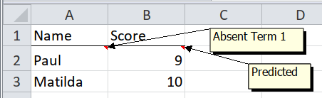

8.2 Data embedded in comments

Comment strings are availabe in the comment column, just like character.
Comments can have formatting, but tidyxl doesn’t yet import the formatting. If
you need this, please open an
issue. It would probably be
imported into a comment_formatted column, similarly to character_formatted.
path <- system.file("extdata", "worked-examples.xlsx", package = "unpivotr")
xlsx_cells(path, sheet = "comments") %>%
select(row, col, data_type, character, numeric, comment) %>%
behead("N", "header")## # A tibble: 4 x 7
## row col data_type character numeric comment header
## <int> <int> <chr> <chr> <dbl> <chr> <chr>
## 1 2 1 character Paul NA Absent Term 1 Name
## 2 2 2 numeric <NA> 9 Predicted Score
## 3 3 1 character Matilda NA <NA> Name
## 4 3 2 numeric <NA> 10 <NA> ScoreComments apply to single cells, so follow the same procedure as “Already a tidy table but with meaningful formatting of single cells”.
cells <-
xlsx_cells(path, sheet = "comments") %>%
select(row, col, data_type, character, numeric, comment)
cells## # A tibble: 6 x 6
## row col data_type character numeric comment
## <int> <int> <chr> <chr> <dbl> <chr>
## 1 1 1 character Name NA <NA>
## 2 1 2 character Score NA <NA>
## 3 2 1 character Paul NA Absent Term 1
## 4 2 2 numeric <NA> 9 Predicted
## 5 3 1 character Matilda NA <NA>
## 6 3 2 numeric <NA> 10 <NA>values <-
cells %>%
select(-comment) %>%
behead("N", header) %>%
select(-col) %>%
spatter(header)
values## # A tibble: 2 x 3
## row Name Score
## <int> <chr> <dbl>
## 1 2 Paul 9
## 2 3 Matilda 10comments <-
cells %>%
behead("N", header) %>%
mutate(header = paste0(header, "_comment")) %>%
select(row, header, comment) %>%
spread(header, comment)
comments## # A tibble: 2 x 3
## row Name_comment Score_comment
## <int> <chr> <chr>
## 1 2 Absent Term 1 Predicted
## 2 3 <NA> <NA>## # A tibble: 2 x 4
## Name Score Name_comment Score_comment
## <chr> <dbl> <chr> <chr>
## 1 Paul 9 Absent Term 1 Predicted
## 2 Matilda 10 <NA> <NA>